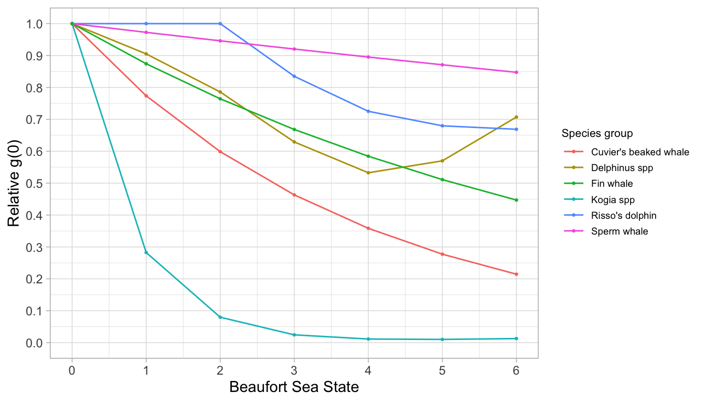

7 Estimating g(0)
Detection function models assume g(0) is 1.0.
In distance sampling, a “detection function” is fit to the your sighting distances to reflect the fact that animals farther out are more difficult to detect. That detection function is a model of how the probability of detection declines with increasing distance from your survey trackline. The equations for detection function models are all constructed to assume that the probability of detecting an animal on your trackline (distance = 0 km) is 1.0 – you never miss an animal on your trackline. This trackline detection probability is referred to as g(0).
In reality, though, it almost never is – and it greatly impacts results.
When searching for marine mammals at sea, even some of those occurring directly on your survey trackline will be missed. Real g(0) is actually less than 1.0. This technicality makes a big difference: if g(0) is actually 0.5, the assumption that g(0) is 1.0 will underestimate animal abundance by 50%. Some animals, such as pygmy and dwarf sperm whales (Genus Kogia), are very cryptic and easily missed, and thus likely have a true g(0) below 0.1. This means that estimates assuming their g(0) is still 1.0 will underestimate true abundance by 90%! Moreover, all species – whether you are a pygmy sperm whale or a blue whale – become easier to miss when sighting conditions deteriorate (e.g., Beaufort sea states 4 - 6).
Therefore, g(0) must be estimated then used to scale the detection function.
So g(0) matters, and the assumption of most detection functions that g(0) = 1.0 is nearly always wrong. Luckily, there is a way to handle this that avoids constructing new detection function equations or estimating even more parameters during the detection function fitting process: we use an estimate of g(0) to scale the detection function. Say the detection function predicts that the probability of detection is 1.0, 0.8, and 0.6 at distances 0 km, 1 km, and 2km, respectively. If g(0) is actually 0.5, then we can scale the detection function so that those respective predictions are now 0.5, 0.4, and 0.3.
Estimating g(0) for a survey generally involves four steps:
First, you estimate g(0) in perfect conditions (i.e., Beaufort sea state 0).
Second, you scale that estimate downward to approximate g(0) when conditions are less than ideal (i.e., a separate g(0) estimate for each Beaufort sea state from 1 to 6). This is known as the relative trackline probability, or relative g(0), or most simply: Rg(0).
Third, you determine the weighted average value of g(0) for your particular survey, based on the proportional distribution of effort in each sea state. You pass this single value to your line-transect analysis functions.
Fourth, you need to determine the CV of your weighted estimate of g(0). This isn’t straightforward, because you first need to simulate a new distribution for the weighted g(0) estimate, from which you then calculate the CV.
The first of these steps is typically the biggest lift analytically, and very few studies provide absolute estimates of g(0) for their species of interest. Doing so involves Bayesian simulations and special field methods (see this example from Jay Barlow, NOAA-NFMFS Southwest Fisheries Science Center).
Instead, most studies assume that the absolute g(0) is in fact 1.0 – even though it’s not – and proceed directly to the second step – relative trackline probability, Rg(0). This is more common because it can be estimated directly from the survey data, thanks to an approached developed in Barlow (2015), “Inferring trackline detection probabilities, g(0), for cetaceans from apparent densities in different survey conditions” (Marine Mammal Science).
Relative g(0)
Archived Rg(0) estimates
As of 2022, most northeast Pacific NOAA-NMFS studies still use the Rg(0) estimates from Barlow (2015), which are based on NOAA-NMFS cruises from 1986 to 2010. LTabundR includes Barlow’s results in a built-in dataset.
data(barlow_2015)Here is the top of this dataset, in which each row is a Rg(0) estimate for a single species - Beaufort sea state scenario.
barlow_2015 %>% head(12)
title scientific spp truncation
1 Delphinus spp Delphinus 005-016-017 5.5
2 Delphinus spp Delphinus 005-016-017 5.5
3 Delphinus spp Delphinus 005-016-017 5.5
4 Delphinus spp Delphinus 005-016-017 5.5
5 Delphinus spp Delphinus 005-016-017 5.5
6 Delphinus spp Delphinus 005-016-017 5.5
7 Delphinus spp Delphinus 005-016-017 5.5
8 Stenella attenuata ssp Stenella attenuata ssp 002-006-089,-090 5.5
9 Stenella attenuata ssp Stenella attenuata ssp 002-006-089,-090 5.5
10 Stenella attenuata ssp Stenella attenuata ssp 002-006-089,-090 5.5
11 Stenella attenuata ssp Stenella attenuata ssp 002-006-089,-090 5.5
12 Stenella attenuata ssp Stenella attenuata ssp 002-006-089,-090 5.5
pooling regions bft Rg0 Rg0_CV
1 none none 0 1.000 0.00
2 none none 1 1.000 0.00
3 none none 2 0.940 0.25
4 none none 3 0.722 0.25
5 none none 4 0.485 0.14
6 none none 5 0.394 0.20
7 none none 6 0.404 0.50
8 none none 0 1.000 0.00
9 none none 1 0.728 0.03
10 none none 2 0.531 0.06
11 none none 3 0.386 0.09
12 none none 4 0.282 0.12This dataset includes Rg(0) estimates for the following species:
barlow_2015$title %>% unique
[1] "Delphinus spp" "Stenella attenuata ssp"
[3] "Stenella longirostris ssp" "Striped dolphin"
[5] "Rough-toothed dolphin" "Bottlenose dolphin"
[7] "Risso's dolphin" "Short-finned pilot whale"
[9] "Killer whale" "Sperm whale"
[11] "Kogia spp" "Cuvier's beaked whale"
[13] "Mesoplodon spp" "Dall's porpoise"
[15] "Minke whale" "Sei/Bryde's"
[17] "Fin whale" "Blue whale"
[19] "Humpback whale" "Unidentified dolphin"
[21] "Unidentified cetacean" "Pacific white-sided dolphin"
[23] "Pygmy killer whale" If your study species – or one with similar detectability – can be found on this list, then you can take this data.frame of Rg(0) values and move on to the next step.
Note that if you do not have a large survey dataset, this may be the only option available to you. Estimating new Rg(0) values requires a large number of sightings (i.e., hundreds) across many Beaufort states.
New Rg(0) estimates
LTabundR includes a function, g0_model(), which you can use to apply the Barlow (2015) modeling methods to generate new estimates of Rg(0) based on your own survey data.
To do this, you first need a cruz object in which effort has been split into short segments (5 - 10 km). If you want to work with NOAA-NMFS WinCruz data from the Pacific, you can use a built-in dataset of 1986 - 2020 surveys that is processed specifically for use in Rg(0) estimation:
data("noaa_10km_1986_2020")To use this dataset in R(0) estimation, we first filter it to systematic effort within sea states 0 - 6:
cruzi <- filter_cruz(noaa_10km_1986_2020,
analysis_only = TRUE,
eff_types = 'S',
bft_range = 0:6,
on_off = TRUE)You can then estimate Rg(0) for each Beaufort sea state using the function g0_model(). For example, the code for striped dolphin (Stenella coeruleoalba) is as follows:
rg0 <- g0_model(spp = '013',
truncation_distance = 5.5,
cruz = cruzi,
pool_bft = NULL,
jackknife_fraction = .1)The jackknife_fraction input indicates that standard error and CV will be estimated using an iterative jackknife procedure in which 10% of the data is removed in each iteration. Find more details on this process using the function documentation, ?g0_model().
The input pool_bft provides a way to specify that low Beaufort sea states, which are typically rare in open-ocean surveys, should be pooled. This step may be needed in order to achieve a monotonic decline in the g(0) ~ Bft relationship for some species, but the default is NULL, i.e., no pooling. If pool_bft is the character string "01", Beaufort states 1 will be pooled into state 0. If pool_bft is the character string "012", Beaufort states 1 and 2 will be pooled into state 0. We recommend beginning with NULL then modifying this if needed, based on the output.
The chief result of this function is a $summary table:
rg0$summary
bft Rg0 ESW n Rg0_SE Rg0_CV ESW_SE
1 0 1.0000000 3.968033 10 0.00000000 0.0000000 0.16288323
2 1 0.9574903 3.724726 10 0.10437256 0.1090064 0.13458164
3 2 0.8507491 3.460165 10 0.16075534 0.1889574 0.10190113
4 3 0.6374127 3.180650 10 0.13055026 0.2048128 0.06967222
5 4 0.4649322 2.898497 10 0.08508186 0.1829984 0.05699997
6 5 0.4238391 2.624881 10 0.07858997 0.1854241 0.07451945
7 6 0.4534225 2.370146 10 0.10177148 0.2244517 0.10268952The model predicts that Rg(0) declines rapidly with deteriorating sea state:
plot(Rg0 ~ bft, data = rg0$summary,
ylim=c(0,1), type='o', pch=16)
abline(h=seq(0,1,by=.1),
col='grey85', lty=3)In addition to the summary above, this function returns various details, including the details of the Generalized Additive Model (GAM) (for both the estimate and the jackknifed datasets), and the raw sightings and segments used in the model.
[1] "Rg0" "gam" "jackknife" "summary" "sightings" "segments" To produce these estimates efficiently for many species, you can use the wrapper function g0_table(), as follows. First you build a list of parameters for each species/species group:
species <- list(
list(spp = c('005', '016', '017'),
title = 'Delphinus spp',
truncation = 5.5),
list(spp = '021',
title = "Risso's dolphin",
truncation = 5.5,
pool_bft = '12'),
list(spp = '046',
title = 'Sperm whale',
truncation = 5.5),
list(spp = c('047', '048', '080'),
title = 'Kogia spp',
truncation = 4.0),
list(spp = '061',
title = "Cuvier's beaked whale",
truncation = 4.0),
list(spp = '074',
title = 'Fin whale',
truncation = 5.5,
regions = 'CCS'))Note that we used shorter truncation distances for cryptic species.
Note also that we had to pool Beaufort sea states 0-2 for Risso’s dolphins in order to maintain a monotonic decline in the Rg(0) ~ Beaufort curve.
Note also that we limited the geostrata used to model the fin whale Rg(0) curve to the California Current System (‘CCS’, after Barlow 2015), so that zero-inflated segments did not confound the model.
We then pass this species list to g0_table(). In this example, we are only estimating the Rg(0) relationship, without conducting jackknife estimation:
rg0s <- g0_table(cruzi,
species,
eff_types = 'S',
jackknife_fraction = NULL)Now plot the result using a dedicated LTabundR function:
g0_plot(rg0s, panes=1)
Weighted average g(0)
Since g(0) clearly depends upon survey conditions, and since each survey is carried out in a specific sequence of conditions, a unique, weighted g(0) value must be estimated for each species in each geostratum and year of interest.
This will be done automatically by the line-transect analysis functions coming up (see LTabundR::lta()), meaning you only need a table of Rg(0) values in order to proceed to the next step. But you can also calculate weighted g(0) values separately as an isolated analysis, which we show below.
Let’s say we want to estimate the average g(0) for striped dolphins during the WHICEAS survey years of 2017 and 2020. From above, we have an estimate of the Rg(0) and its CV for each Beaufort state:
rg0$summary %>% select(bft, Rg0, Rg0_CV)
bft Rg0 Rg0_CV
1 0 1.0000000 0.0000000
2 1 0.9574903 0.1090064
3 2 0.8507491 0.1889574
4 3 0.6374127 0.2048128
5 4 0.4649322 0.1829984
6 5 0.4238391 0.1854241
7 6 0.4534225 0.2244517We also have a processed cruz object with 2017 data:
load('whiceas_cruz_1720.RData')
cruz_17 <- filter_cruz(cruz_1720, years = 2017, verbose=FALSE)To view the distribution of effort in this WHICEAS 2017 across sea states, we can use the function summarize_bft():
summarize_bft(cruz_17)$overall
# A tibble: 6 × 3
bftr km prop
<dbl> <dbl> <dbl>
1 1 130. 0.0200
2 2 583. 0.0897
3 3 901. 0.139
4 4 2140. 0.329
5 5 1873. 0.288
6 6 875. 0.135 We then use the function g0_weighted_var() to compute the weighted Rg(0) for our survey as well as its CV. This function carries out an automated optimization routine to simulate a new distribution for the weighted g(0), which is then used to estimate the weighted CV.
weighted_g0_2017 <-
g0_weighted(Rg0 = rg0$summary$Rg0,
Rg0_cv = rg0$summary$Rg0_CV,
cruz = cruz_17)The result:
weighted_g0_2017$g0[1:2]
wt.mean wt.cv
1 0.526 0.188Now let’s do the same for WHICEAS 2020 and compare the weighted g(0) estimate:
# Filter to 2020
cruz_20 <- filter_cruz(cruz_1720, years = 2020, verbose=FALSE)
# Summarize Bft effort
summarize_bft(cruz_20)$overall
# A tibble: 6 × 3
bftr km prop
<dbl> <dbl> <dbl>
1 1 88.2 0.0165
2 2 262. 0.0490
3 3 434. 0.0813
4 4 1482. 0.278
5 5 2004. 0.376
6 6 1067. 0.200 Note that conditions were a bit worse in 2020 compared to 2017. We therefore expect the weighted g(0) estimate to be lower:
weighted_g0_2020 <-
g0_weighted(Rg0 = rg0$summary$Rg0,
Rg0_cv = rg0$summary$Rg0_CV,
cruz = cruz_20)The result:
weighted_g0_2020$g0[1:2]
wt.mean wt.cv
1 0.494 0.19Confirmed: weighted g(0) for 2020 is slightly lower than in 2017, due to generally worse survey conditions. These year-specific estimates should prevent those different conditions from impacting their respective abundance estimates.